Kushiro
Kushiro · Hokkaido
Kushiro
Highlighted on the Hokkaido map.
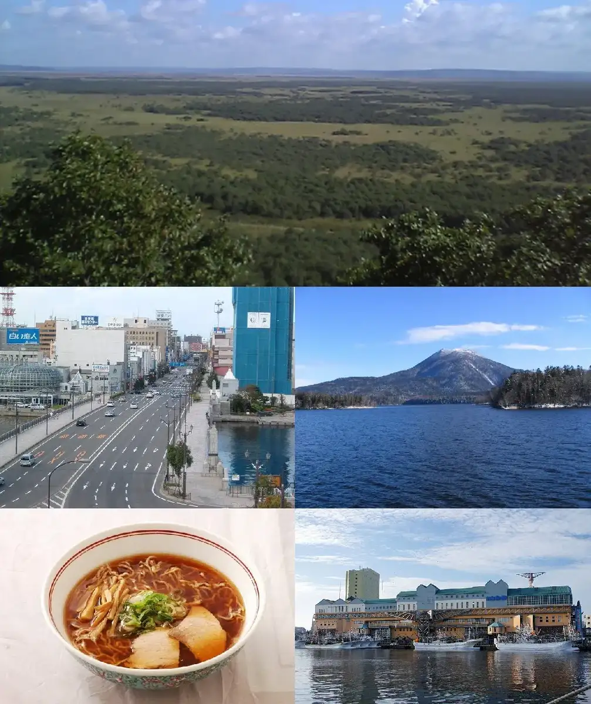
Stay
釧路プリンスホテル
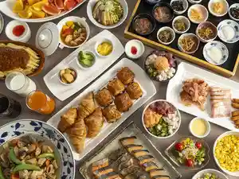
Kushiro Purinsuhoteru
東横ＩＮＮ釧路十字街
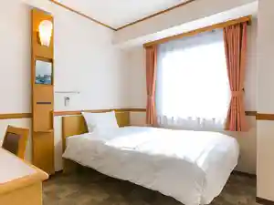
Touyoko I N N Kushiro Juuji Machi
ゲストハウス Proof Point
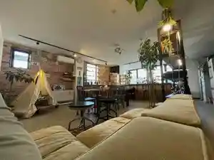
Gesutohausu Proof Point
ANAクラウンプラザホテル釧路 by IHG
Ana Kuraunpurazahoteru Kushiro By Ihg
天然温泉 丹頂の湯 スーパーホテル釧路・黒金
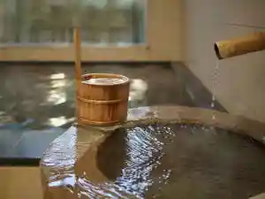
Tennen Onsen Tanchou No Yu Suupaahoteru Kushiro Kurogane
ホテルルートイン釧路駅前
Hoteruruutoin Kushiroeki Mae
ホテルエリアワン釧路（ＨＯＴＥＬ ＡＲＥＡＯＮＥ）
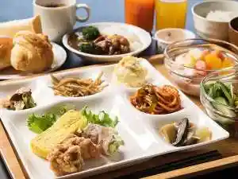
Hoterueriawan Kushiro ( H O T E L A R E A O N E )
コンフォートホテル釧路

Konfootohoteru Kushiro
備長炭の湯 ホテルクラウンヒルズ釧路（ＢＢＨホテルグループ)
Binchou Sumi No Yu Hoterukuraunhiruzu Kushiro ( B B H Hoteruguruupu )
天然温泉 幣舞の湯 ドーミーインPREMIUM釧路(旧:ラビスタ釧路川)
Tennen Onsen Nusamai No Yu Doomiiin Premium Kushiro ( Kyuu : Rabisuta Kushiro Kawa )
ホテルアクシアイン釧路
Hoteruakushiain Kushiro
駅前ホテルパルーデ釧路
Ekimae Hoteruparuude Kushiro
Dining
居酒屋 浜ちゃん
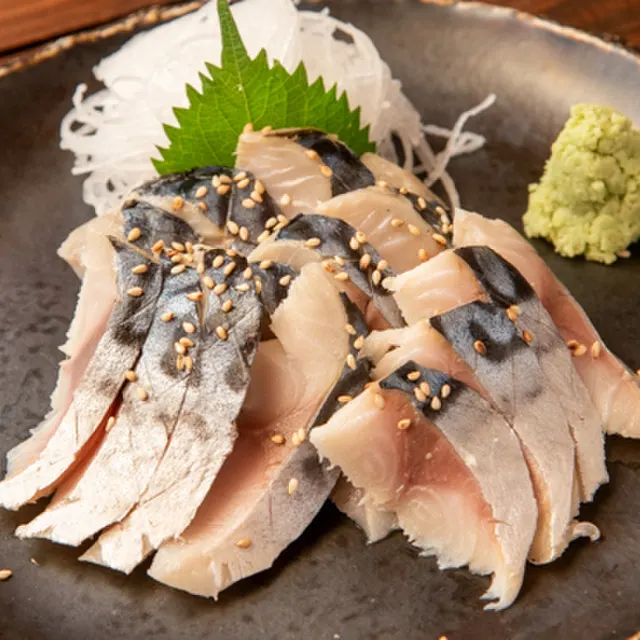
Izakaya Hama Chan
炭火居酒屋 炎 釧路末広店

Sumibi Izakaya Honoo Kushiro Suehiro Mise
Northern Restaurant Porker
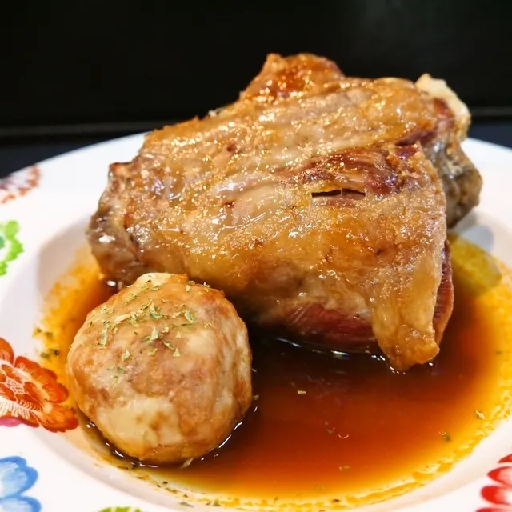
Northern Restaurant Porker
山の猿 芦野店
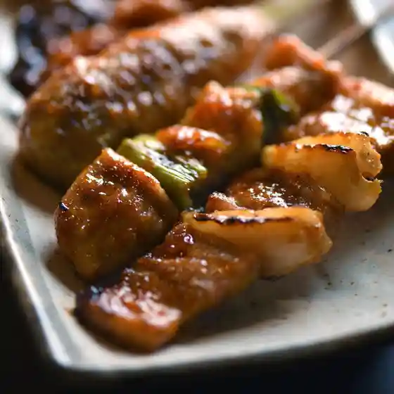
Yama No Saru Ashino Mise
BISTRO AMUSE
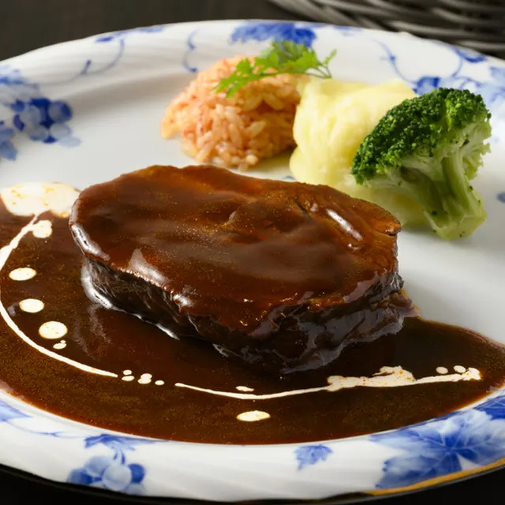
Bistro Amuse
いろはにほへと 幣舞橋店
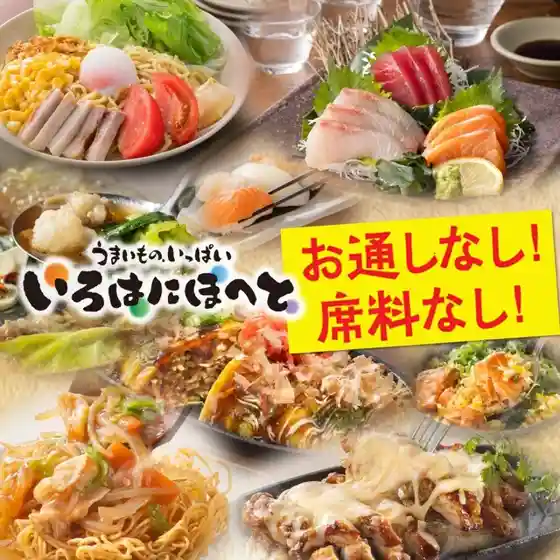
Irohanihoheto Nusamai Hashi Mise
天ぷら料理 さくら
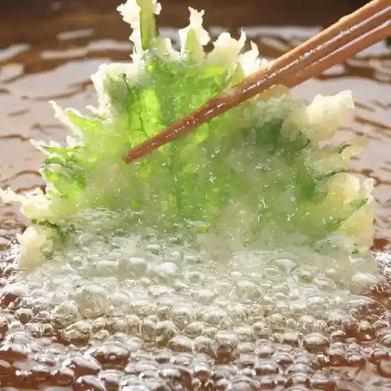
Tenpura Ryouri Sakura
炭火焼き酒場 華蔵
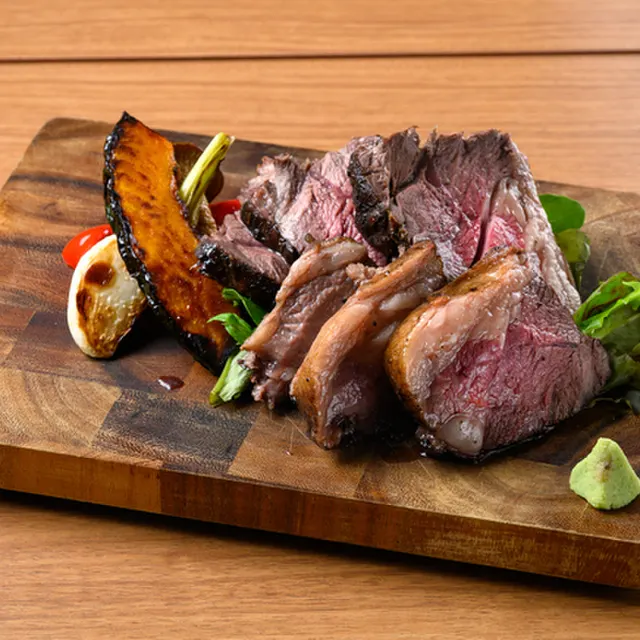
Sumibi Yaki Sakaba Kezou
とりの介 釧路鳥取店
Torino Suke Kushiro Tottori Mise
炉ばた浜っ子
Ro Bata Hamakko
洋風居酒屋＃浜marina
Youfuu Izakaya # Hama Marina
くしろ駒形家
Kushiro Komagata Ie
炭火居酒屋 炎 釧路文苑店
Sumibi Izakaya Honoo Kushiro Bun'En Mise
釧路ジンギスカン総本店
Kushiro Jingisukan Souhonten
大衆酒場 炉ばた浜小屋
Taishuu Sakaba Ro Bata Hama Koya
魚々路 釧路栄町店
Sakana (Kurikaesi) Michi Kushiro Sakaemachi Mise
炉ばたキッチン RICASA
Ro Bata Kitchin Ricasa
牛角 釧路昭和店
Gyuukaku Kushiro Shouwa Mise
釧路食堂
Kushiro Shokudou
海へ 釧路中央店
Umi He Kushiro Chuuou Mise
くし炉 あぶり家
Kushi Ro Aburi Ie
生ラムジンギスカン 浜じん本店
Nama Ramujingisukan Hama Jin Honten
炭火焼 きら
Sumibi Yaki Kira